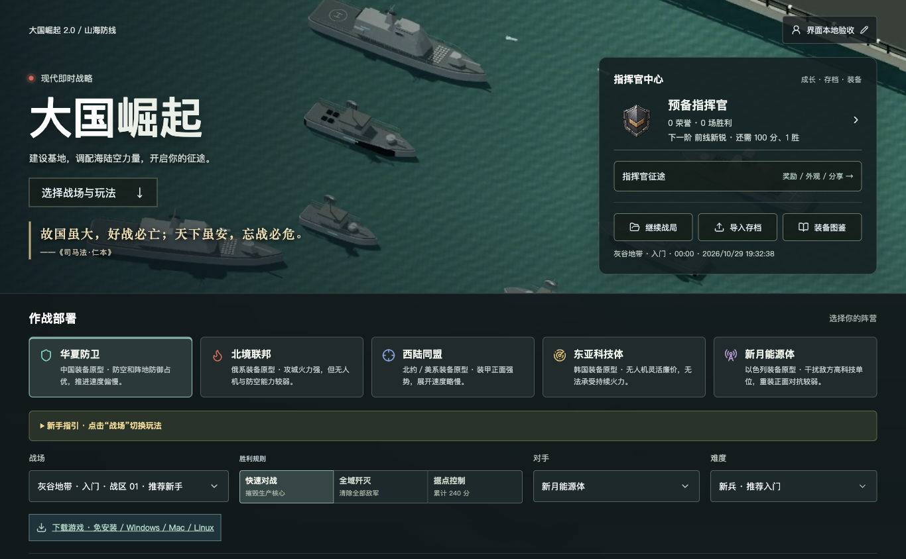
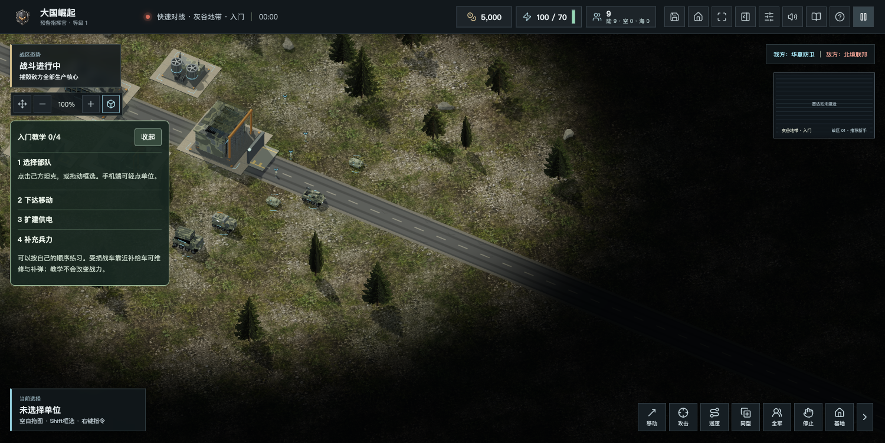
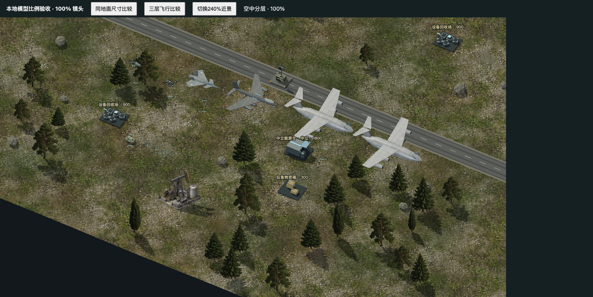
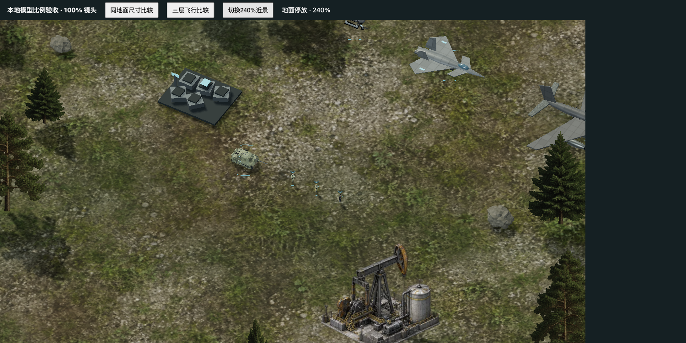
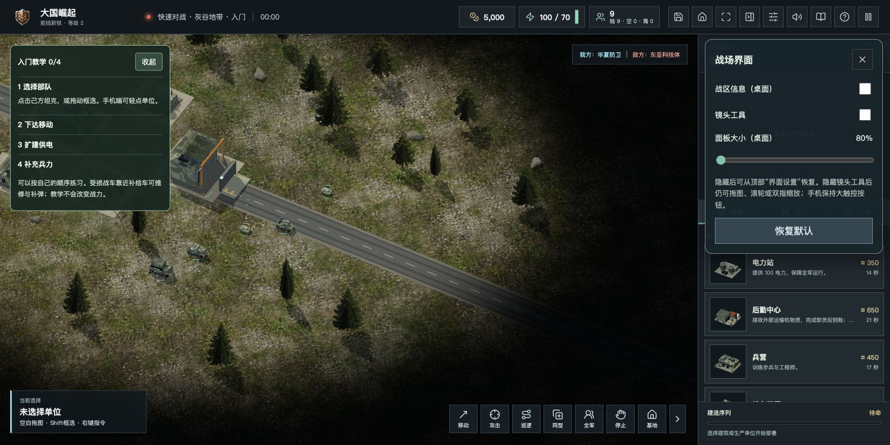
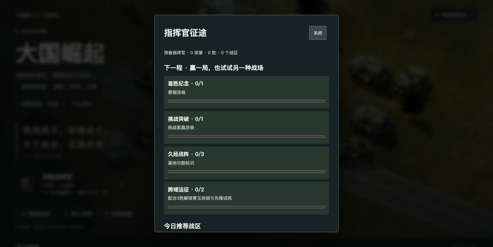

最近，公众号来了很多新朋友。
有人点开网页玩了一局，有人下载后认真试了好几个版本，也有人把发现的问题做成 PPT，一页页发给我。谢谢大家愿意关注这个还在成长中的游戏，也谢谢每一位把“不好用在哪里”说清楚的朋友。
《大国崛起》能改到今天，离不开你们。很多我自己没注意到的细节，都是大家在实玩中发现的。

从选择战场开始。电脑和手机都可以从官网进入网页试玩。
这段时间，更新主要围绕大家能直接感受到的地方展开。
地图支持拖拽，手机上可以单指拖图、双指缩放；主界面重新分组，战场可以分类、搜索。灰谷入门提供初始资金与支援，给第一次接触这类游戏的朋友多一些准备时间。

100%镜头下的公网开局画面。入门可以先从灰谷开始。
另一件反复打磨的事，是人物、坦克和飞机的比例。运输机之前太抢眼，步兵又容易淹没在草地里。现在重新校准了显示大小，区分地面、低空和高空层次；人物的头盔、携行具和队色标记也更容易辨认。

游戏引擎内的受控比例验收场景，用于比较不同机型；不是玩家真实对局。

240%近景检查：保留迷彩，也让人物轮廓和所属队伍更清楚。
挡视野的战区信息、镜头工具可以在“界面设置”中收起。树影方向、启动素材失败后的重试和错误定位，也根据反馈持续修正。遇到异常时，请尽量告诉我设备、版本、地图和操作步骤，截图会很有帮助。

已上线的界面设置，可以按习惯调整战场视野。
本轮还在继续处理巡逻体验，并让四步教学的提示更短、入口更直接。完成验收的改动会同步到官网；下载页会标清各个包的实际版本。网页更新、桌面包和商店审核各有进度，请以对应页面说明为准。
特别感谢 CAI。一路以来，你认真试玩、整理问题，也和我深入讨论了《大国崛起》接下来应该走向哪里。
我们聊到了游戏的基调，也聊到了经济、资源争夺、长期经营的乐趣，以及玩家除了战斗，还能不能有更多选择。
有个问题一直留在我脑子里：玩家赢了一局之后，为什么还想再来一局？
是换个阵营，试一套不同的打法？是经营起来的基地，还有下一步建设计划？是与朋友一起完成一场艰难的护航？还是上次失败后，终于想到了一条新路线？
这些答案，会影响游戏以后该加什么，也会影响什么东西应该少加一点。
先说明一下：当前版本仍在持续打磨，5.0是希望和大家一起探索的长期目标。下面这些是候选方向，还没有全部做出来，也没有确定的上线日期。
我想保留现在随时开一局的即时战斗，同时尝试一条可以慢慢继续的路线：
在区域地图上做经营与发展决策，进入具体战场后，再指挥海陆空部队完成任务。
比如先考虑产业、科技和补给，再决定向哪里推进；一场战斗的结果，能够影响下一步选择。玩家退出之后，可以保存进度，下次接着玩。
这也引出了更多值得试的小目标：
• 建设、经济与科技各有取舍，同一张地图可以尝试不同路线。
• 除了摧毁基地，也能围绕守点、护航、撤离或合作目标展开。
• 胜利能留下纪念，失败能看懂原因，下一次有值得尝试的新办法。
• 短局和长战役都能选，让不同时间安排的朋友都能参与。

现有指挥官征途界面。目标、纪念和外观是已有尝试，后续长期经营仍需逐步验证。
实现上会先把3.0的基础体验做好，再用小地图、小规模战役验证经营与战斗能否结合，反馈好再逐步扩展。我希望每一步都能让大家玩到、指出问题，而不是只把版本号往上改。
你们玩过哪些类似游戏？《红色警戒》《帝国时代》《文明》《国家的崛起》《铁锈战争》，或者别的作品里，有没有一个机制，让你很多年后还记得？
欢迎在留言区直接按这个格式聊聊：
我玩过： 哪款游戏。
我最喜欢： 一个具体玩法，以及喜欢它的原因。
我希望大国崛起先改： 一件最影响体验、或最值得期待的事。
让我愿意再开一局的是： 你的答案。
如果只能优先做一项，你会选操作与流畅度、AI与平衡、经营科技、连续战役，还是多人合作？也欢迎提出完全不同的想法。
没有玩过策略游戏的朋友，同样欢迎留言：“第一眼不知道点哪里”“这一局为什么输了”“手机上哪个按钮不好按”，这些反馈都很有价值。
官网与试玩：https://www.daguojueqi.site/
直接进入游戏：https://www.daguojueqi.site/play/
下载与版本说明：https://www.daguojueqi.site/downloads/index.html
开源代码：https://github.com/chencheng666/great-powers-rts
现在就可以先体验网页，手机也可以用浏览器打开；手机独立应用与各商店包请看实际发布状态。存档、荣誉保存在本机，换设备前记得导出备份。
想参与开发、做模型或者测试的朋友，也欢迎到 GitHub 交流。借鉴喜欢的游戏时，我们会尊重原作品的代码与素材授权，逐步做出自己的特色。
再次感谢 CAI，感谢最近关注的新朋友，也感谢一直陪着游戏成长的老朋友。
希望大家多多体验、多多留言。你的一条具体建议，可能就是下一次更新的起点。